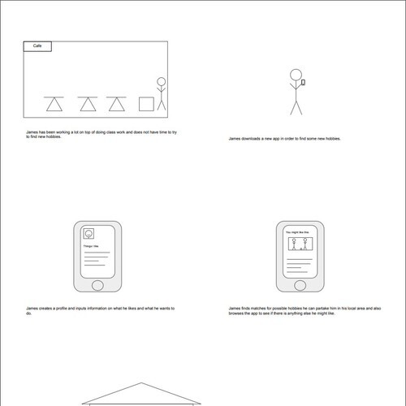
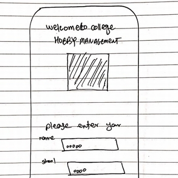
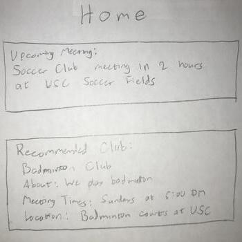
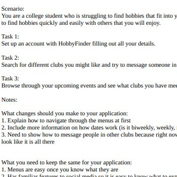
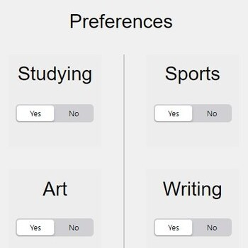

Problem Statement

Users are exhausted and frazzled because there doesn’t appear to be enough time to utilize or enjoy all the campus resources and/or events offered to them. A solution should provide users with an organized list of the choicest, optimal activities on campus.
Affinity Diagram

Our group brainstormed several ideas for overall application use and design as well as types of users.
Personas

Personas of potential college hobby / club finder.
Storyboard
Some story boards showing use for a hobby finding app.
Sketches
Some sketches showing solutions for our app design.
Paper Protoype
A video of a paper protoype that explains the hobby finder app.
Usability Script
A document showing the usability script of the HobbyFinder App
Low-Fi Prototype
A web app that showcases a low-fi prototype of our application.
Hi-Fi Prototype
A web app that showcases a hi-fi prototype of our application.
Hi-Fi Prototype Presentation
Our team's presentation about our College Hobby Application hosted on YouTube.